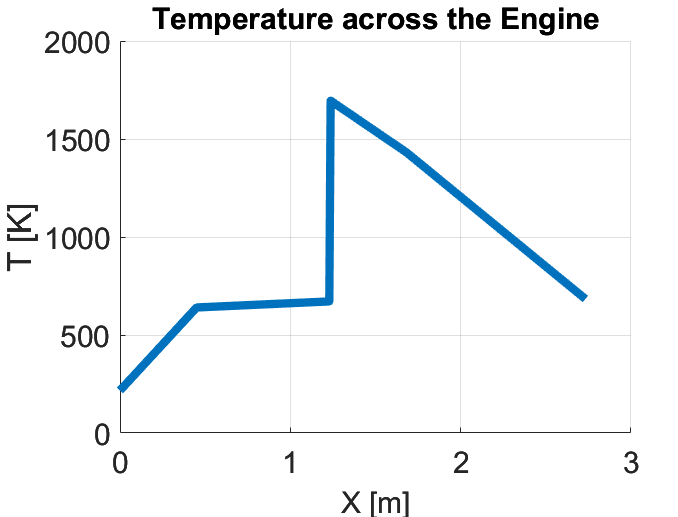
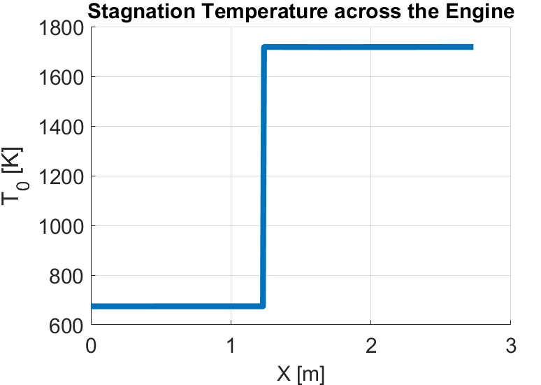
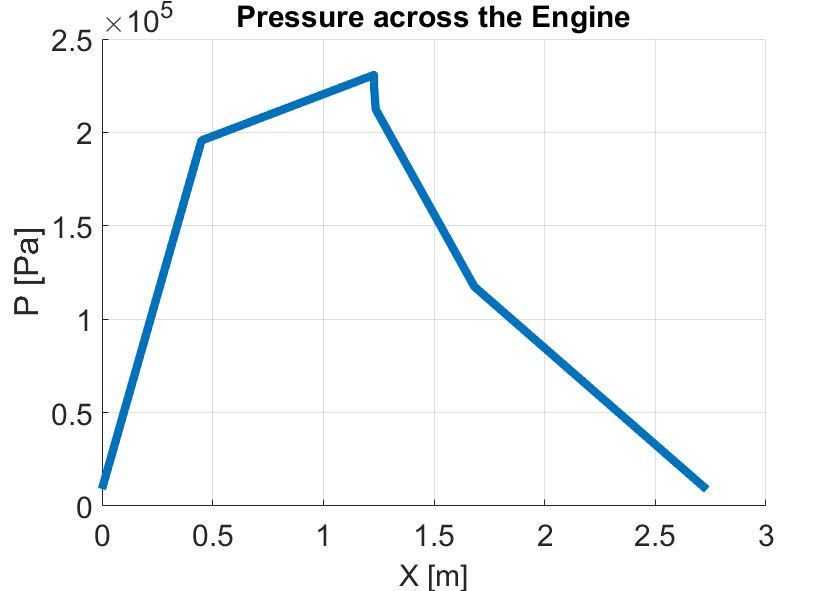
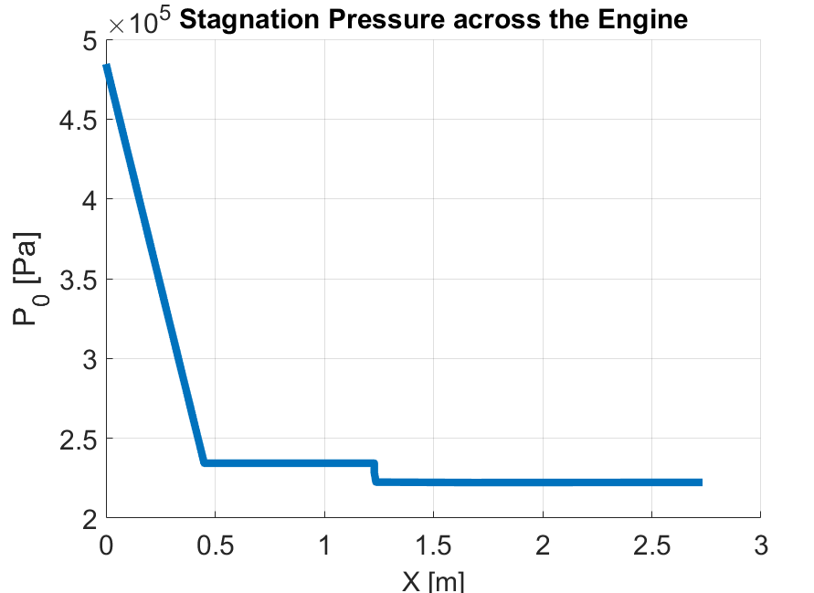
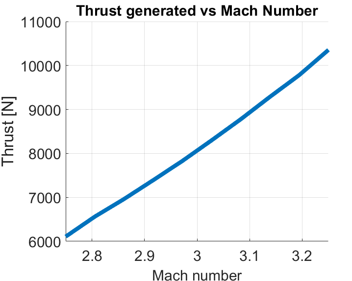
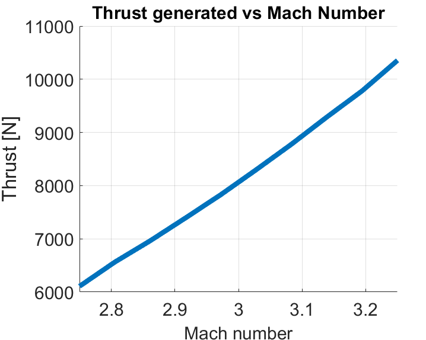

Designing & Simulating a Ramjet Engine Using First Principles of Compressible Flow
A Brief Synopsis
Under this project, a ramjet engine is designed using first principles of compressible flow. Components simulated include: inlet, cowl, diffuser, flameholder, combustor, converging and diverging nozzle. The theoretical performance of the engine is analyzed for inlet mach numbers between 2.75 and 3.25. Analysis is performed for each section in regards to its effect on other components which will be shown later.
1. Inlet Design
A 2 step inlet is designed to turn the flow from outside of the engine to the diffuser. At every angle, an oblique shock is formed and finally there is a normal shock at the end of the inlet to turn the supersonic flow into subsonic before it enters the diffuser. Otherwise, the diffuser will increase the speed if the flow is supersonic. Normal shocks occur when they get detached from the body due to a very large turning angle. As the name suggests, the inlet and outlet flow velocities are normal to the shock wave. Across a normal shock, the supersonic flow changes to subsonic flow. Accordingly, \(P_2 > P_1\), \(T_2 > T_1\), and \(\rho_2 > \rho_1\).
\[\begin{equation} \frac{P_2}{P_1} = 1 + \frac{2 \gamma}{\gamma - 1} (M_1^2 - 1) \label{eq:normal_p} \end{equation}\]
\[\begin{equation} \frac{\rho_2}{\rho_1} = \frac{(\gamma + 1) M_1^2}{2 + (\gamma -1) M_1^2} \label{eq:normal_rho} \end{equation}\]
\[\begin{equation} \frac{T_2}{T_1} = \frac{P_2}{P_1} \frac{\rho_1}{\rho_2} \label{eq:normal_t} \end{equation}\]
\[\begin{equation} M_2 = \frac{1 + \frac{(\gamma - 1)}{2} M_1^2}{\gamma M_1^2 - \frac{(\gamma - 1)}{2}} \label{eq:normal_M} \end{equation}\]
Oblique shocks, on the other hand, occur when the supersonic flow is turned into itself. In other words, the flow experiences a re-direction by a giving turning angle \(\theta\). An illustration of oblique shock is shown in , taken from . As \(\theta\) increases from 0 to 90 \(\degree\), the oblique shock becomes stronger and accordingly, adds more pressure drag into the system. The relation between \(\beta\) (shock wave angle), \(\theta\) (turning angle) and mach number of incoming flow is related using the \(\theta-\beta-M\) relation.
\[\begin{equation} tan(\theta) = 2 cot(\beta) [\frac{M_1^2 (sin(\beta))^2 - 1}{M_1^2 (\gamma + cos(2 \beta)) + 2}] \label{eq:oblique_prandel} \end{equation}\]
2. Cowl Design
The cowl is designed in a way that the oblique shock waves from the 2 step inlet intersect at the tip of the cowl. Accordingly, a rough diagram of an inlet along with a cowl is drawn below.
\[\begin{equation} \label{Eq:cowl_x} X = \frac{sin(\beta_2 - \theta_1)L}{sin(180-\beta_2)} \end{equation}\] \[\begin{equation} \label{eq:cowl_y} y = \frac{h}{tan(\beta_2)} \end{equation}\] \[\begin{equation} \label{eq:cowl_h} tan(\beta_1) = \frac{h\tan(\beta_2)}{\alpha tan(\beta_2) + h} \end{equation}\]
\[\begin{equation} \label{eq:cowl_l} x + y = (\frac{L sin(\beta_2 - \theta_1)}{sin(180-\beta_2)}) + \frac{h}{tan(\beta_2)} \end{equation}\]
3. Diffuser Design
The flow in the diffuser is considered to be isentropic while satisfying the conservation of mass and momentum. To determine the properties across the diffuser, small perturbation theory is used to get the differential conservation of mass, momentum (with no body forces) and energy.
\[\begin{equation} \label{eq:mass} \frac{d\rho}{\rho} + \frac{dA}{A} + \frac{du}{u} = 0 \end{equation}\]
\[\begin{equation} \label{eq:momentum} \frac{d\rho}{\rho} + udu = 0 \end{equation}\] \[\begin{equation} \label{eq:energy} dh + udu = 0 \end{equation}\]
4. Flemholder Design
The flameholder is modelled to provide an adiabatic pressure drop in the flow stream. The change in pressure is governed by the relation given in . It is also assumed that the area profile does not change across the flameholder. In order to determine the temperature and the mach number of the flow after flameholder, conservation of mass flow rate is used. The mass flow rate can be simplified to the basic characteristics of the flow.. Furthermore, the energy is also conserved.
\[\begin{equation} \label{eq:flameholder} \frac{\Delta P}{P}=0.81\gamma M^2 \end{equation}\]
\[\begin{equation} \label{eq:mass flow} \dot{m} = \frac{P}{RT}AM\sqrt{T\gamma R} \end{equation}\]
\[\begin{equation} \label{eq:h} C_p T_1 + \frac{M_1^2 \gamma R T_1}{2} = C_p T_2 + \frac{M_2^2 \gamma R T_2}{2} \end{equation}\]
Unknown variables are \(T_2\) and \(M_2\). Accordingly, the linear system of equations and are solved using method of substitution to determine expressions for both variables.
\[\begin{equation}
\label{eq:flame_t}
T_2 = (2 C_P T_1 + M_1^2 \gamma R T_1) (\frac{1}{2C_P + M_2^2 \gamma R})
\end{equation}\]
\[\begin{equation} \label{eq:flame_p} \frac{P_1 M_1}{\sqrt{T_1}} = \frac{P_2 M_2 \sqrt{2C_P + M_2^2 \gamma R}}{\sqrt{2C_P T_1 + M_1^2 \gamma R T_1}} \end{equation}\]
5. Combustor Design
To model the combustor, 1D quasi flow with heat addition is used. While the conservation of mass and momentum are same as to regular 1D quasi flow, the conservation of energy now involves and additional term ‘q’ which refers to the heat addition as shown in . The term q refers to the rate of heat added to the incoming flow. It is described as the ratio of the rate of heat provided by the fuel to the mass flow rate of the incoming flow, shown in
\[\begin{equation} \label{eq:rayleigh} h_1 + \frac{u_1^2}{2} + q = h_2 + \frac{u_2^2}{q_2} \end{equation}\]
\[\begin{equation} \label{eq:q} q = \frac{\dot{q}}{\dot{m}} \end{equation}\]
The flow properties across the combustor are determined iteratively by first calculating the the stagnation temperature by using and then finding the stagnation temperature at the M = 1 state. Once all these states are known the relative ratios of the pressure and temperature are determined using equations given in and
\[\begin{equation} \label{eq:t_02} q = C_p ( T_\text{02} - T_\text{01}) \end{equation}\] \[\begin{equation} \label{eq:r_t} \frac{T}{T*} = M^2 (\frac{1+\gamma}{1+\gamma M^2})^2 \end{equation}\]
\[\begin{equation} \label{eq:r_p} \frac{P}{P*} = \frac{1+\gamma}{1+\gamma M^2} \end{equation}\]
For the base design, the combustor section only intakes the specified equivalence ratio. This is changed later when the engine’s performance is analyzed for various mach numbers. Accordingly, the equivalence ratio is made variable to provide a constant exit mach number for the combustor. The mass flow rate of the fuel is determined, \(\dot{q}\) of fuel, and finally ‘q’. For the purposes of the fuel, hydrogen is used and has lower heating value (LHV) of 120 \(\frac{MJ}{kg}\). Moreover, the psychometric ratio for hydrogen is 0.0291 which is used to determine the mass flow rate.
\[\begin{equation} \label{eq:phi} \dot{m}_\text{fuel} = 0.0291 \phi \dot{m}_\text{air} \end{equation}\]
\[\begin{equation} \label{eq:q_dot} \dot{q} = LHV \dot{m}_\text{fuel} \end{equation}\]
\[\begin{equation} \label{eq:q_final} q = \frac{\dot{q}}{\dot{m}_\text{air}} \end{equation}\]
Although it is assumed that the flow burns instantaneously in the combustor, it is still important to determine the length of the combustor which is done by determining the time taken for the fuel to burn. The inlet conditions are used to determine the time constant. To get the length of the combustor, average of the inlet and exit velocities in the combustor is taken and multiplied with \(\tau\).
\[\begin{equation} \label{eq:tao} \tau = 325 p^{-1.6} exp(-0.8 \frac{T_0}{1000}) \end{equation}\]
6. Converging Nozzle Design
Similar to the diffuser, isentropic quasi 1D flow relations are used to determine the properties of the flow across the converging nozzle. As it can be seen from , if M is less than 1 and dA/A is less than 1, then du/u is greater than 1. This means that as the subsonic flow is constricted due to a negative area differential, the flow gets faster. However, the maximum speed the subsonic flow can attain by constricting the area is the local speed of sound. This is referred to as throat area where mach number is equal to 1. Like the isentropic flow in diffuser, the area ratio and mach number can be solved if one is known. Since the desired \(M_2\) = 1, the corresponding area profile can be derived. The temperature and pressure can be derived from the stagnation parameters since they remain the same throughout the isentropic flow.
7. Diverging Nozzle Design
The diverging nozzle for the ramjet engine is a 2D minimum length nozzle designed using method of characteristics (MOC). To determine the properties of a 2D flow, the flow is considered to be inviscid, compressible, and irrotational. Using the third property velocity potential functions are generated and solved to determine solutions for characteristic lines. These are special lines which can be used to calculate properties along the flow because they have a specific pattern in terms of how their properties evolve. The two lines are called left and right turning characteristic. A variable ‘K’ is a dummy parameter for both the characteristics.The magnitude of the constant ‘K’ for both left and right turning characteristic. As seen, the properties of point 3 depends upon the properties of 1 and 2. The corresponding location of the third point in the global axes is given the linear system of equations. Once the properties of the third point are known, the process can be rolled further to generate more points and design the entire nozzle. \[\begin{equation} \label{eq:k2_plus} \theta_3 - \nu_3 = \theta_2 - \nu_2 = K_\text{2,plus} \end{equation}\] \[\begin{equation} \label{eq:k_minus} \theta_3 + \nu_3 = \theta_1 + \nu_1 = K_\text{1,minus} \end{equation}\] \[\begin{equation} \label{eq:moc_pos} \frac{y_3 - y_2}{x_3 - x_2} = tan(\frac{(\theta_3 + \theta_2)+(\mu_3 + \mu_2)}{2}) \end{equation}\] \[\begin{equation} \label{eq:moc_pos2} \frac{y_3 - y_1}{x_3 - x_1} = tan(\frac{(\theta_3 + \theta_1) - (\mu_3 + \mu_1)}{2}) \end{equation}\]
8. Analysis
The pressure and temperature, both stagnation and static, are shown below. As expected, the stagnation pressure and temperature remain constant through isentropic devices: diffuser, converging, and diverging nozzle.
   
The performance of the engine is shown below:

 
 
9. Supporting Files
The analysis and code used to design/simulate these components can be found here